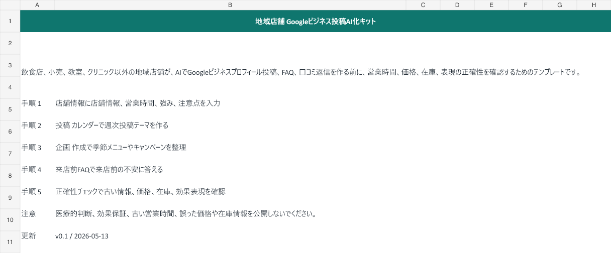
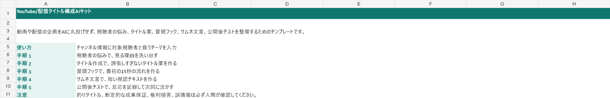

このキットが解く問題
作業を1つに絞る
「AIを導入したい」は広すぎます。問い合わせ、商品説明、SNS投稿など、最初に減らす作業を選びます。
費用対効果を見る
削減時間、時給換算、ツール代を比べて、月額課金する価値があるかを判断します。
危ない自動化を避ける
送信、公開、契約、見積もり、効果保証など、AIに判断させない境界を残します。
公開中のキット


地域店舗 Googleビジネス投稿AIキット

Googleビジネスプロフィール投稿、FAQ、口コミ返信を、営業時間・価格・在庫の正確性を確認しながら作れます。
YouTube/配信タイトル構成AIキット

視聴者の悩み、タイトル案、冒頭15秒、サムネ文言、公開後テストを整理し、釣りすぎない企画改善ができます。
どれを選ぶか
| 状況 | 最初に使うキット | 理由 |
|---|---|---|
| AIツールを買う前に、どの作業からAI化するべきか決めたい小規模事業者・副業ワーカー | AI導入 90分診断キット | ツール名だけ調べても、自分の業務で本当に浮く時間と危険な範囲が見えない。 |
| メルカリ、BASE、Shopify、楽天などで商品説明を改善したい人 | EC/フリマ 商品説明AIキット | AIがそれっぽい説明文を作っても、状態、サイズ、付属品、発送条件の抜けや誇張が売買トラブルになる。 |
| 美容室、ネイル、整体、エステなど、SNSから予約につなげたい小規模サロン | サロンSNS・予約導線AIキット | 投稿は作れても、効果保証っぽい表現や写真許可の抜け、予約までの導線不足が残りやすい。 |
| 行政書士、社労士、税理士、コンサルなど、問い合わせ対応を整理したい専門サービス | 士業/コンサル 問い合わせ整理AIキット | AI返信は速い一方で、専門判断、契約、見積もり、断定表現を誤ると信用リスクが大きい。 |
| 求人票や候補者返信を改善したい小規模事業者・採用担当 | 採用/求人票AIキット | 求人票は盛るほど応募後のミスマッチが増え、曖昧すぎると応募が来ない。 |
| 飲食店、小売、教室、クリニック以外の地域店舗 | 地域店舗 Googleビジネス投稿AIキット | 古い営業時間、価格、在庫、効果表現を公開すると、来店前の期待と現場がズレる。 |
| YouTube、ライブ配信、ショート動画のタイトルや冒頭構成を改善したい個人クリエイター | YouTube/配信タイトル構成AIキット | AIにタイトルを作らせると強い言葉は出るが、動画内容とズレたり、釣りっぽくなって信頼を落としやすい。 |
| 個人事業、副業、小規模チームで月末の振り返りや報告を短時間でまとめたい人 | 月次報告AIキット | AIに月次報告を丸投げすると、数字の根拠、事実と感想、来月の約束が混ざりやすい。 |
反応を見て改善する
このページは無料配布版です。反応が多い業種、途中で詰まるシート、欲しい自動化をGitHub Issueで集め、次の有料候補を絞ります。